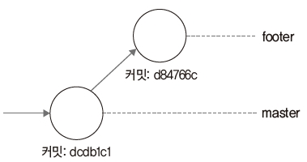

브랜치에서 다른 브랜치로 이동하면 워킹 디렉터리는 변경됩니다. 이 절에서는 브랜치와 워킹 디렉터리가 어떤 관계가 있는지 자세히 알아보겠습니다.
현재까지 작업한 로그 기록을 확인해 봅시다. 로그를 출력할 때 브랜치 흐름도 같이 보려면 –graph 옵션을 함께 사용합니다. –graph –all 옵션을 사용하면 모든 로그를 출력합니다.
infoh@DESKTOP MINGW64 /e/gitstudy06 (footer)
$ git log --graph --all
$ git log --graph --all
* commit dcdb1c1fa4ef78bedd8dc13bc267e99391cc9782 (master)
| Author: hojin <infohojin@gmail.com>
| Date: Sat May 11 18:45:35 2019 +0900
| master working...
|
* commit d84766c7f87b1d9d234050949c48681ba4e35da8 (HEAD -> footer, feature)
Author: hojin <infohojin@gmail.com>
Date: Sat May 11 17:10:02 2019 +0900
First
지금까지 로그 내역을 참고하여 커밋 과정을 나타내면 다음과 같습니다.
그림 6-10] 지금까지의 브랜치 작업

로그 출력 왼쪽 부분에 브랜치 경로와 작업들이 텍스트 그래프로 같이 출력됩니다.
Note: –more 옵션으로 출력될 커밋 개수를 제한할 수 있습니다. 제한된 출력으로 브랜치 정보를 간략하게 확인할 수 있습니다.
[예시]
$ git show-branch --more=10
지금까지는 브랜치를 생성한 후 master 브랜치에서만 코드를 수정하고 커밋했습니다. master 브랜치는 dcdb1c1 커밋을 가리킵니다.
footer 브랜치의 소스 코드 내용을 확인해 봅시다.
infoh@DESKTOP MINGW64 /e/gitstudy06 (footer)
$ cat branch.htm ☜ footer의 내용
<h1>브랜치 실습을 합니다.</h1>
이번에는 master 브랜치로 체크아웃하여 소스 코드를 확인해 보겠습니다.
infoh@DESKTOP MINGW64 /e/gitstudy06 (footer)
$ git checkout master
Switched to branch 'master'
infoh@DESKTOP MINGW64 /e/gitstudy06 (master)
$ cat branch.htm ☜ master의 내용
<h1>브랜치 실습을 합니다.</h1>
<h2>마스터 워킹 디렉터리 작업 중</h2>
두 소스 코드에 차이가 있습니다. 브랜치를 이동하면 변경된 각자 브랜치의 마지막 워킹 디렉터리 상태로 빠르게 변경됩니다. footer는 아직 한 줄짜리 정보를 워킹 디렉터리에 가지고 있는 상태고, master는 두 줄짜리 정보를 워킹 디렉터리에 가지고 있는 상태입니다.